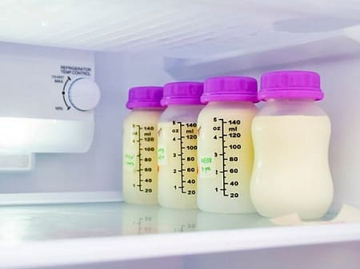
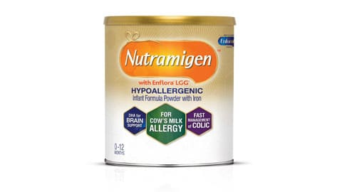

Большинство родителей убедятся, что им придется сменить не один вид смеси, прежде чем они найдут ту, которая подойдет их ребенку. Выбор смесей в настоящее время очень велик, и на некоторые из них у детей могут проявиться аллергические реакции. Ниже даны наши советы по подбору наиболее подходящей для вашего ребенка смеси.
СИМПТОМЫ
У каждого ребенка время от времени могут появляться газы, жидкий стул и небольшое беспокойство. Если ваш ребенок и его животик большую часть времени счастливы, тогда вам, пожалуй, не о чем беспокоиться. Но если у вашего ребенка часто или практически всегда наблюдаются следующие симптомы, это может означать наличие у него аллергии на молочную смесь:
• колики, служащие причиной ежедневного многочасового плача,
• срыгивание в больших объемах после кормления,
• зеленоватый, слизистый жидкий стул;
• объемный, твердый стул и болезненные дефекации,
• кровянистый стул;
• хроническая сыпь, покрывающая большие участки кожи;
• хроническая заложенность носа, груди или свистящее дыхание.
ЛЕЧЕНИЕ
Изменение техники кормления. Не меняйте сразу смесь. Некоторым детям нужно просто исправить технику кормления. Для начала попробуйте вот что:
Избегайте перекармливания. В первые несколько месяцев большинству детей нужно от 60 до 110 мл при каждом кормлении. Если младенец просит еще, это может быть просто из-за того, что ему нравится сосать. Пробуйте давать ему соску-пустышку. Вы также можете обнаружить, что вашему ребенку больше подходит кормление порциями поменьше, но чаще.
Меняйте типы бутылочек. Возможно, ребенок просто заглатывает слишком много газов во время кормления. Это может произойти, если молоко течет из соски слишком быстро или если бутылочки пропускают внутрь воздух. Попробуйте соску с более медленным течением или другие бутылочки и посмотрите, не стало ли лучше.
Замена порошка жидкостью. По непонятным причинам некоторые дети переваривают готовые жидкие смеси легче, чем порошковые. Прежде чем поменять смесь, попробуйте эту же марку в жидкой форме.
Замена смесей. Если проблемы у вашего ребенка не прекратились, вы можете принять следующие меры именно в таком порядке, — чтобы найти то, что подходит вашему ребенку. Каждый раз, меняя смесь, подождите неделю и оцените результаты, прежде чем сделать следующий шаг (если изменение не привело к еще более худшим результатам).

Смена марки. Если ваш ребенок употребляет молочную смесь, попробуйте другую марку — тоже на основе молока. Между марками существуют Тонкие отличия, которые могут сыграть роль. Если вы используете смесь на основе сои, тоже имеет смысл смешить марку.
Попробуйте органическое питание. Если вы кормите ребенка обычными смесями, попробуйте органическую альтернативу такого же типа (молочную или соевую).
Перейдите на «нежную для животика» смесь на молочной основе. Все самые известные производители выпускают «нежную», «чувствительную», «комфортную» версии молочных смесей, в которых молочные белки слегка раздроблены на более мелкие части. Вы можете заменить ими обычные молочные или соевые смеси.
Переход с молочной смеси на соевую или наоборот. Если вы испробовали все возможные варианты замены внутри одного типа смеси, попробуйте кардинальную смену другим типом (молоко вместо сои или соя вместо молока).
СОВЕТ ДОКТОРОВ СИРС: СМЕСИ НА СОЕВОЙ ОСНОВЕ И СМЕСИ БЕЗ ЛАКТОЗЫ – НЕНАДОЛГО Соевые белки не так хорошо подходят человеческим детям, как молочные. Лактоза — самый простой сахар, который человеческий мозг использует в качестве источника энергии. Если соя — единственное, что подходит вашему ребенку, мы рекомендуем постараться вернуться к смеси на молочной основе через 1—2 месяца. Так как пищеварительная система вашего ребенка развивается, он может заново научиться справляться с молоком без особых проблем. |
Попробуйте смеси без лактозы. Некоторые компании выпускают смеси на основе молока, но без молочного сахара (лактозы). Непереносимость лактозы редко встречается у детей, однако попробовать стоит.
Переход на специальную гипоаллергенную детскую смесь. В таких смесях используют различные комбинации готовых к употреблению молочных протеинов, сахаров и жиров, которые легко перевариваются даже гиперчувствительными животиками. Предлагаемый ассортимент включает такие марки, как «Alimentum», «Neocate», «Nutramigen» и Pregestilim». Они продаются без рецепта в большинстве бакалейных магазинов или аптеках, также их можно купить через Интернет.
Рецепты домашних детских смесей. Это крайний вариант. Если ваш ребенок испытывает дискомфорт даже при употреблении гипоаллергенных смесей, вы можете попытаться дать ему смесь домашнего приготовления на основе козьего или других типов молока с добавлением различных растительных масел, витаминов и других питательных веществ. Поскольку эти источники питания не одобрены РБА, мы не рекомендуем к ним прибегать и не можем дать каких-либо точных инструкций.

Здоровье ребенка от докторов Сирс / Сирс У. и др.